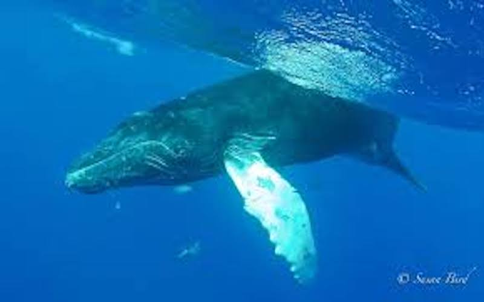
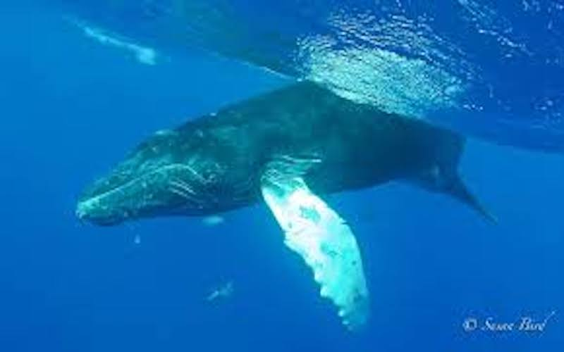

The story begins when Alex and Andrew take a surf trip...
to Bali Indonesia that would inevitably change their lives and the fate of the ocean. Devastated by the amount of plastic in the ocean, they set out to find out why no one was doing anything about it. One afternoon they came across an old fishing village where fishermen were literally pushing their boat through piles of plastic that had washed up on shore. The two surfers realized that the proliferation of plastic threatened both the ocean environment and the fishermen's livelihood. Could the fishermen use their nets, they wondered, to pull the plastic from the ocean? This idea stuck with the 2 surfers and they knew it was time to hit the drawing board. After realizing that the demand for seafood was driving the fishermen to focus on fish instead of plastic, they knew they had to create something that could fund the desired cleanup efforts. This is how the 4ocean Bracelet was born.
Made with recycled materials, every bracelet purchased funds the removal of 1 pound of trash from the ocean and coastlines. In less than 2 years, 4ocean has removed 4,514,566 pounds of trash from the ocean and coastlines.
4ocean currently operates out of multiple countries and employs over 150 people worldwide.

 
